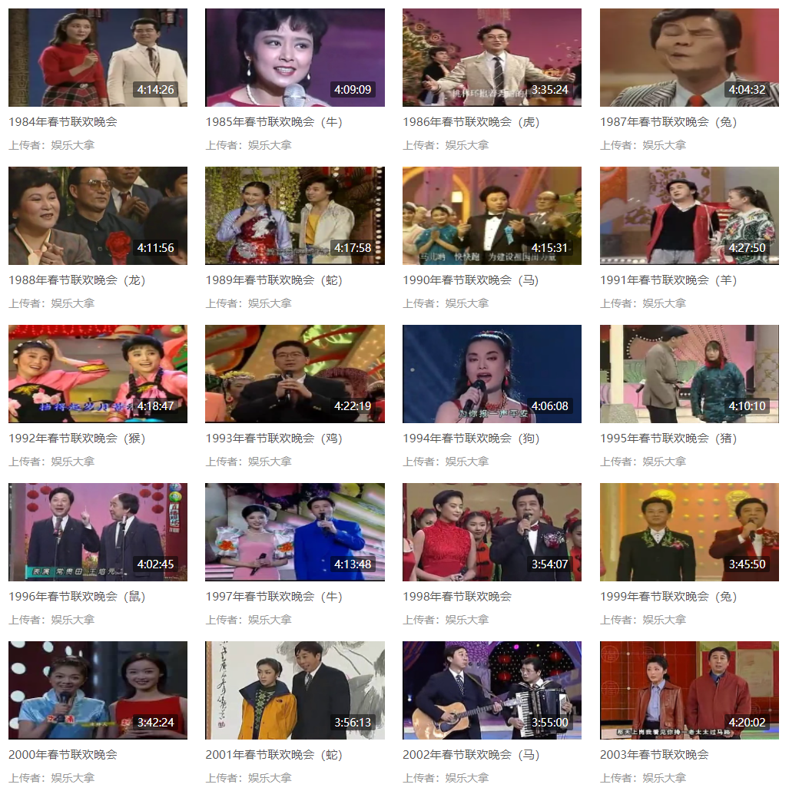
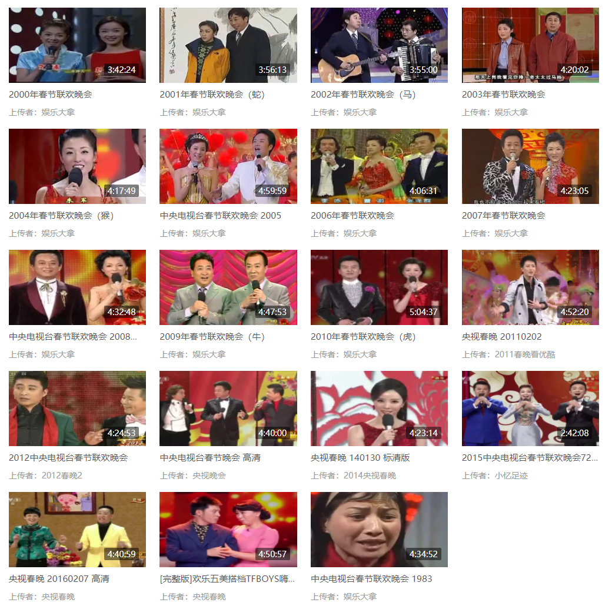

收录于合集

作品简介
【作者】
Chen Liu（刘晨，华南师范大学文化产业与文化地理研究中心/英国伦敦大学皇家赫洛威学院地理系），现为中山大学地理科学与规划学院副教授；
Ning An（安宁，英国格拉斯哥大学地理与地球科学学院），现于广州大学任教。主要从事政治地理学、地缘政治学、社会和文化地理学等领域的研究及教学工作；
Hong Zhu（朱竑，华南师范大学文化产业与文化地理研究中心），现任广州大学华南人文地理与城市发展研究中心主任，主要从事社会文化地理学、旅游地理学等方面的教学与研究工作。
【编译】 杨稚珉（国政学人编译员，上海外国语大学）
【校对】 李源
【审核】 张曼娜
【排版】 陈育涵
【美编 】黄竹音
【来源】 Liu, C., An, N., & Zhu, H. (2015). A Geopolitical Analysis of Popular Songs in the CCTV Spring Festival Gala, 1983–2013. Geopolitics , 20(3), 606–625.
内容提要
本文以“大众型地缘政治”（popular geopolitics）和“实用型地缘政治”（practical geopolitics）为理论背景，在当下的中国地缘政治战略语境中，试图探讨流行歌曲如何代表和再现地缘政治的相关知识，以及这些歌曲通过怎样的宣传使政府的国内、国际政策合法化获得认同。同时，本文作为一篇通过中国流行音乐对地缘政治进行研究的文章，也可被视作是从非西方的角度对大众型和实用型地缘政治进行文献补充。
本文是一篇针对春晚流行歌曲的定性研究，选取了歌曲的歌词及视觉效果为研究对象。首先，本文针对春晚的制作进行分析，主要围绕三个问题展开：春晚节目是如何组织的？春晚的表演者都是谁？演出的主要受众又是哪些？其次，在中国的地缘政治战略如何与春晚流行歌曲相联系这一问题上，本文从两个方面切入讨论。一是在国内层面，这些流行歌曲如何描绘中国的国内政策，以及它们是怎样代表和重塑中国形象的？二是在国际层面，春晚的歌曲通过何种方式体现出中国的国际地位，以及中国对待国际社会的看法？同时中国又如何利用这些歌曲来建立中国的儒家式外交战略？
01
理论背景
由于本研究试图通过地缘政治的方法将大众文化和政治实践相结合，因此大众型地缘政治与实用型地缘政治之间的理论联系成为本文实证分析的理论基础。作为批判性地缘政治学（critical geopolitical studies）的分支，这两种地缘政治理论关注到不同的政治行为体，并认为它们会根据自己的利益进行“地理描绘”。
1.大众型地缘政治学
大众型地缘政治学是批判性地缘政治学的一个流派，重点关注大众文化在地缘政治作用于日常生活时所扮演的角色。因此，大众型地缘政治可定义为大众传播媒介在塑造人们对世界和政治的理解上的重要性研究，或是可以理解为从“娱乐”与“宣传”（propaganda）的关系角度，对地理知识产生和权力行使的方式的探讨。目前，众多学者研究了各种类型的大众文化对政治问题的表达与叙述，如杂志、电影、报纸、电子游戏等。而本文则选取了流行音乐这一对象，通过对其歌词的语境含义分析来建构空间与地点的意义，因为音乐不仅成为人们日常生活中的一种反应性媒介，而且也属于一种文化力量，与各种地理尺度上政策的实施与抵制息息相关。
2. 实用型地缘政治学
实用型地缘政治学一般指政客、智库和官方专家等从政人员的推理，是一种由政治精英所产出的地缘政治知识。实用型地缘政治常与政治精英和政府等所产出的“高级文化”紧密相关。
实际上，实用型地缘政治学与大众型地缘政治学两者间存在着相互依存的关系。政治精英可以利用大众文化活动来宣传和加强他们的政治意识形态和“高级文化”。但目前将大众型地缘政治学与实用型地缘政治学结合研究的成果几乎都出于西方视角，因此本文选取春晚流行歌曲为研究对象也为这一研究领域提供了非西方的视角。
02
研究方法
本文将春晚的流行歌曲分为文本和视觉两类进行研究，并按照时间顺序进行整理。文本数据来源于春晚1983至2013年间的共539首歌的歌词，而影像资料则主要是这些歌曲的录像，以及央视出品的一部五集纪录片《春晚三十年》。
在处理文本数据上，作者在文中给出了严格的四步编码步骤。第一步，根据歌词内容将这些歌曲分为国内事务和国际事务两类；第二步，团队根据歌词内容开发了一套开放代码（open codes），并且为了保留歌词的原始含义，团队还直接从歌词中截取关键词作为歌词内代码（vivo codes）；第三步，团队将开放代码按照子主题和概念分类；第四步，对这些数据进行重新编码和解码，将数据与概念进行双向辩证。
在处理影像资料上，本文主要聚焦歌曲来源与视觉效果呈现出的意义，因此团队将视频资料也分为两类。一类是歌曲的演出录像，可以围绕表演者、词曲人、表演姿态和动作、表演装扮及演唱情感等因素进行分析，将其与编码后的歌词匹配作进一步研究。由此，在国内事务分类下，歌曲可划分成地区文化、少数民族、中国认同和领土争议这几个主题；而在国际事务分类下，歌曲的表现形式一般为外文歌曲的中文版、外文歌曲的原版、由外国歌手演唱的中文歌和表达对理想世界的美好想象的歌曲。另一类是视频录制的背景信息，作者基于“春晚团队的历史与故事”“主要表演者的故事”“编舞和舞台设置”这三个原则，分析了春晚筹备、制作和筛选的方式。
同时，作者也考虑了春晚的政治背景。在数据分析过程中，团队尝试回答中国的地缘政治战略是什么，以及中央电视台和政府如何组织、审查春晚这两个问题。

03
春晚与地缘政治学
春晚是由中央电视台所制作举办的一年一度的大型晚会。春晚的目的是举国欢庆农历新年，自1983年第一届春晚成功举办以来，与家人一起观看春晚已成为中国人庆祝春节的新传统。在上世纪80至90年代，由于受到电子通讯的局限，仅有数百万观众能观看春晚。而在过去的30年中，其收视率已大大增加。2013年，除夕夜有超过50%的中国人（约有8亿人，其中7亿通过电视收看，1亿来自网络直播）在观看晚会。
而尽管在这30年间，中央电视台逐渐商业化，但它仍属于国有电视台，因此在宣传国家政策方面发挥着重要的作用。在2005年之前，春晚的所有节目均由央视组织排练。而2005年之后，除了由央视组织以外，春晚还吸纳了来自其他省级电视台选送的节目以及海内外的艺术家，但所有节目均需通过春晚团队和中国国家新闻出版广电总局的审查（SAPPRFT）。鉴于此，作者认为经过此类筛选，只有被认为是符合中国主流文化和官方意识形态的节目才能登台。
此外，在这样的审查制度之下，春晚中的大多数流行歌曲都是被官方认可的通俗歌曲。这些歌曲一般会由受到国家资助的专业音乐表演艺术家演唱，而一些商业歌曲也不会偏离官方的要求，诸如摇滚乐等挑战主流美学的亚文化表演形式则不受春晚青睐。
尽管春晚是一笔巨大的财政支出，并且现如今也受到了其他新兴娱乐形式的挑战，但由于它对国家政策宣传与社会全方面稳定起到重要作用，因此已经在电视荧屏上保留了三十多年。
而在地缘政治学的研究中，国家的重要性以及全球政治体系的二分法（分为国内/国外两个方面进行研究）被认为是现代全球政治的主要原则。从历史上看，尽管中国的政治制度并非建立在此类政治哲学基础之上，但自1949年以来，中国已融入了这样的“威斯特伐利亚模式”。因此，作者在本文采用这种二分法来分析春晚流行歌曲，并试图从中理解中国的地缘政治战略。
04
国内事务：民族团结与国家身份认同
维护民族团结 是中国最重要的内部政策之一，为了加强中国民众对增强民族团结的认知，春晚中会安排一些歌曲用以代表和体现人民对中国统一的期望。
一方面， 晚会会采用能体现不同地区特色或少数民族文化的流行歌曲来证明中国的多元文化。 一些歌曲 通过“家园”的概念强调中国内部的地域认同。 如1991年的晚会中安排了12首描绘不同省份特色的歌曲联合组成了“家乡”这一单元的节目。这些歌曲的演唱者都是由国家资助的歌手，歌曲的表演形式也相对固定：歌曲的开头描绘家园的美丽景色，接着介绍当地文化、经济及技术发展，结尾强调了当地人民的归属感和对家园的美好祝愿。这些表演通过强调行政省份的特色加深人们的身份认同。
晚会每年也会安排一部分民族歌曲，以表达在中国境内 各民族的平等和统一 。在过去的30年间，这一类型的组织方式也在不断发生变化。80-90年代，晚会上的民族歌曲均由专业词曲作者和音乐家改编，并以普通话演唱，具有一定的汉族中心感。到了90年代，歌曲中的民族元素不断增加，演出者会穿着带有民族特色的服装进行表演。进入21世纪，原生态的音乐表演形式流行起来，少数民族的“原始”生活方式得到关注，这些具有民族特色的表演形式加强了汉族文化与少数民族文化间的平等感。根据声音地理学家的说法，声音和政治是深度共存的，因为发声和聆听可用于建立公共的对话空间。因此，随着“土著”“真实”的声音与文化不断传播，晚会也在不断构建中国观众心中少数民族文化的“纯粹”。
此外，中国政府 在不同民族自治区进行的经济与政治战略布局 也成为歌曲传唱的对象。如2005年春晚由藏族歌手韩红表演的《天路》以青藏铁路为唱诵对象，配合荧幕背景上的西藏景色及铁路通车的场景，展现了西藏人民对这一布局的支持与欢迎。同时， 通过民族歌声来认可中央政府的治理 也是推进民族政策和促进民族团结的重要方式。
另一方面，晚会的歌曲还有意 强调“中国”这一身份概念 。为了加强这一认同，晚会中许多歌曲使用“家庭”来比喻中国，在这个家庭中，所有的中国人都是兄弟姐妹。《我热恋的家乡》（1991年）、《爱我中华》（1999年、2000年）就是这一主题的代表作品。
同时，这些流行歌曲还能 通过歌声描绘中国的“主权地图” ，强调领土完整的中国统一的身份认同。如《我的中国心》（1984年）、《故乡情》（1985年、1988年）、《万里长城长》（1985年）都是表达了香港爱国情怀的歌曲。又如在1999年澳门回归之际，《七子之歌》也表达了澳门对祖国的深情。对于中国而言，港澳的回归既意味着“家庭”团圆，又可视作是对中国日益强大的经济和政治实力的认可。
而面对台湾问题，春晚则会每年组织台湾地区的商业流行歌手登台演唱，表演的歌曲通常结合了流行音乐和中国传统文化，以此来唤起台湾地区人民的中国认同。如周杰伦演唱的《青花瓷》（2008年）和王力宏演唱的《十二生肖》（2013年）中都有浓郁的“中国特色”，这不仅体现了两岸间相同的文化根基，也符合中国政府所提出的“一个中国”原则。
综上，从国内事务的角度，这些歌曲不仅仅从人民的角度代表着中国流行的大众文化，同时也体现着中央政府的权威。

05
国际事务：中国的世界观与国际秩序
在改革开放和中国国际地位提高的背景下，80年代后期，中国的流行音乐开始走向世界。早期春晚荧幕上呈现的是外国流行歌曲的中文版，这些流行的中文版外文歌曲体现了外来文化在中国受到欢迎。在过去的二十年中，外国歌手在春晚舞台上演唱外文歌曲逐渐取代了外文歌曲中文版的演唱，从全新角度表达中国的世界观。
与古代中国寻求中华文化优先地位不同的是，中国的新视界观则 强调中国的独立地位及对世界文化多样性的追求，同时体现出中国关注与其他国家之间平等交往的特点。 出于这样的思考，春晚也会定期邀请外国歌手前来表演外文歌曲，或是与中国歌手一起演唱中文歌曲。如在2013年的春晚舞台上，席琳·迪翁（Celine Dion）演唱了她的名曲《我心永恒》（My Heart Will Go On），之后又与中国歌唱家宋祖英合唱了中国民谣《茉莉花》。这些外国人在春晚舞台上的出现，不仅表现出中外的友好关系，而且还促进了汉语作为一种世界性语言的发展，并推动了中华文化在世界范围内的流行。
此外，通过此类观点，中国也在使用这样的儒家式外交战略来重塑国际秩序。儒家的政治哲学主张社会和政治秩序应以道德为主导，因此中国一直以来坚持 走和平发展道路 。基于这样的思想，中国试图通过“和”的思想构建与他国关系。其中，“和谐”的概念突出了儒家的伦理哲学（仁爱、后圣、公平、正义、守信、诚实、革故鼎新、文明）与现代法律制度意识（如民主、法治）共同影响了中国外交政策的制定。
为了回应中国试图肩负建立和平与平等世界的儒家式外交战略，春晚的歌曲也在“和谐”这一观念的指导下抒情，塑造了和谐中国、友好的中国人民和和谐世界的形象。如《和谐乐章》（2007年）、《同一个世界，同一个梦想》（2009年）以及《天下一家》（2013年）都传递出中国追求和平发展、世界和谐的愿望。
综上，在国际事务方面，这些歌曲不仅表达了中国在国际社会中所持的开放和平立场，也代表并再现了中国对新的国际秩序的观点与构想。
06
总结
本文基于对春晚流行音乐的分析，从非西方的角度探讨了大众文化、政府权力和地缘政治之间的复杂关系。在国内事务的表述上，流行歌曲表达了中国人民对民族身份的认同和民族团结的渴望；在国际事务中，又体现出中国和谐发展的外交政策以及中心主义的世界观。由于春晚的歌曲需要受到官方的审查方可演出，因此这些歌曲从文本及视觉效果中传达的信息都可被视作政府官方意识形态的反映。
作为对乔安·夏普（Joanne Sharp）呼吁重视“次地缘政治学”的回应，本文坚持在中国的社会和政治背景下理解春晚，不能简单地将大众文化理解为人民的声音。因此，在本文研究中，这些流行歌曲所代表的大众文化也是中国政府地缘政治战略的一部分。尽管联欢晚会中大多数流行歌曲不是政治性歌曲，但它们能够帮助中央政府制定地缘政治战略，并通过这样的大众文化将思想传播给所有的中国听众。换句话说，晚会上的歌曲既不是源于权威的文化，也不仅是大众所创造的文化，而是在民众与政治之间建立牢固联系的桥梁。
此外，作者不仅认为这些歌曲有助于中国政府的统治，而且这些没有任何政治含义的歌曲在晚会的编排下也成为了中国地缘政治叙事的重要组成部分。
译者评述
本文以“大众型地缘政治”（popular geopolitics）和“实用型地缘政治”（practical geopolitics）为理论背景，选取了歌曲的歌词及视觉效果为研究对象，分析得出这些流行歌曲也是中国政府地缘政治战略的一部分。从理论角度来看，与传统地缘政治学关注国际政治的“扩张性”“对抗性”和“霸权性”不同，由于全球化程度加深和传统地缘政治因素作用削弱，批判性地缘政治学更加关注在相互依存的国际关系中政治、经济、社会各因素相互交融的现象。因而在批判性地缘政治学的视角下，地缘政治不再是政治家或官员专属的研究特权（即实用型地缘政治学），它的形式更加大众化，将研究对象扩展到电影、报刊等，认为这些媒介构建了民族认同及其他民族和地区在大众中的形象，并影响着政府外交战略的制定。[1] 基于这样的理论，在中国案例的研究中，春晚流行歌曲成为非常适合的研究对象。这些歌曲既具备大众流行性的特定，又在审查制度的大环境之下具有一定的官方权威性，因而能够成为联系二者的沟通桥梁。
目前关于春晚的研究多集中于美学和新闻传播学范畴讨论，而较少有关注到春晚所蕴含的政治性。音乐作为大众娱乐的常见载体，本身也不具备政治倾向。歌词和演唱形式作为音乐表现的组成部分，却能够从听觉与视觉上带给受众双重干预效果，继而对公众舆论也产生影响。约翰·斯特里特（John Street）就指出歌曲或演奏会产生的代言效应已经被证实在全国大选中产生了舆论影响。[2] 因此，音乐与政治的互动作为大众文化与权威文化连接的纽带，成为权力表达的一种方式。
从本文对春晚流行歌曲的分析可以得出其中具有的政治含义，而在晚会推广歌曲的方式不仅可以表达出中国在国内事务或国外事务上具有权威性的意图，也使文化与战略的关系成为值得关注的问题。刘方喜在《国家文化战略研究》一书中就提出国家是文化战略的基本单位与视角，而市场则是当今文化战略学研究的基本语境。[3] 这也意味着文化与政权的双向互动在市场程度越来越深的今天作用愈发明显。从春晚歌曲开始，再到现在传播媒介与载体多元化的网络时代，微博、短视频等都值得我们去发掘其背后的文化意义、可发挥的文化作用及相应的战略意义。
参考文献
[1]许勤华：《评批判性地缘政治学》，载《世界经济与政治》，2006年第1期，第20页。
[2]John Street (2013) The Sound of Geopolitics: Popular Music and Political Rights, Popular Communication , 11:1, 47-57
[3]刘方喜等著：《国家文化战略研究》，上海：上海大学出版社2019年版，第4页。
文章观点不代表本平台观点，本平台评译分享的文章均出于专业学习之用, 不以任何盈利为目的，内容主要呈现对原文的介绍，原文内容请通过各高校购买的数据库自行下载。

国政学人
支持学术公益与知识传播
微信扫一扫赞赏作者 __赞赏
已喜欢，对作者说句悄悄话
取消 __
发送给作者
发送
最多40字，当前共字
上一页 1/3 下一页
长按二维码向我转账
支持学术公益与知识传播
受苹果公司新规定影响，微信 iOS 版的赞赏功能被关闭，可通过二维码转账支持公众号。